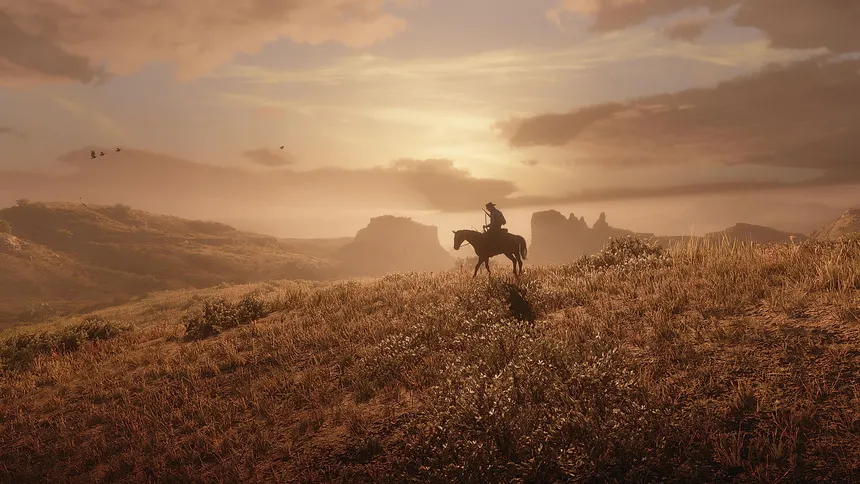

¿HABRÁ UN NUEVO RED DEAD REDEMPTION? MI TEORÍA SOBRE EL FUTURO DE LA SAGA
5 de noviembre de 2026

Red Dead Redemption se ha convertido en una de las sagas más queridas de Rockstar Games. Después del éxito de sus dos entregas principales, muchos jugadores se preguntan si algún día volveremos al Salvaje Oeste con una nueva aventura. Aunque Rockstar todavía no ha anunciado oficialmente una tercera entrega, algunas declaraciones y pistas han vuelto a despertar las esperanzas de los fans.
¿VOLVEREMOS A VER UNA TERCERA ENTREGA?
Dan Houser, cofundador de Rockstar Games y uno de los principales responsables de la historia de los dos primeros Red Dead Redemption, ha comentado que cree que probablemente acabará existiendo una tercera entrega. Sin embargo, también ha expresado que le entristecería no formar parte de ella, ya que considera que las dos primeras historias forman un arco narrativo muy especial.
Por otro lado, Roger Clark, actor de doblaje de Arthur Morgan, también cree que otro juego acabará llegando, aunque podría pasar bastante tiempo hasta que Rockstar decida ponerse manos a la obra.
MI TEORÍA: VOLVER A LOS MEJORES AÑOS DE LA BANDA
Pero ¿y si la próxima entrega no continuase la historia después de Red Dead Redemption 2? Mi apuesta es que Rockstar podría volver atrás en el tiempo y ofrecernos una precuela ambientada varios años antes de los acontecimientos de la segunda entrega.
De esta forma, podríamos conocer los mejores años de la banda de Van der Linde, cuando todavía estaba unida y sus integrantes vivían sus aventuras antes de que todo empezase a torcerse. Sería una oportunidad perfecta para conocer a miembros de la banda que ya no estaban presentes durante los acontecimientos de Red Dead Redemption 2.
También podríamos reencontrarnos con versiones mucho más jóvenes de personajes como Arthur Morgan, John Marston, Dutch van der Linde y Hosea Matthews. Ver cómo se conocieron, cómo fueron creciendo sus relaciones y cómo la banda llegó a convertirse en lo que conocemos sería algo que muchos fans agradecerían.
BLACKWATER: EL ACONTECIMIENTO QUE LO CAMBIÓ TODO
Y, por supuesto, no podemos olvidarnos de Blackwater. La masacre que ocurrió antes de Red Dead Redemption 2 es uno de los acontecimientos más importantes de toda la historia de la saga, pero nunca llegamos a verla directamente.
Una tercera entrega ambientada en esa época podría permitirnos descubrir qué ocurrió realmente durante aquel golpe fallido y cómo acabó provocando la huida de la banda. Incluso podría ser el punto culminante de la historia, conectando directamente con el comienzo de Red Dead Redemption 2.
¿QUÉ PODEMOS ESPERAR DE ROCKSTAR?
Por ahora, todo esto no deja de ser una teoría. Rockstar no ha confirmado que esté trabajando en Red Dead Redemption 3 ni ha anunciado su argumento, personajes o ambientación. La compañía tiene previsto lanzar Grand Theft Auto VI el 19 de noviembre de 2026, por lo que probablemente todavía quede bastante para conocer sus próximos grandes proyectos.
Sea como sea, volver a los mejores años de la banda de Van der Linde y descubrir por fin qué ocurrió en Blackwater sería una forma fantástica de ampliar el universo de Red Dead Redemption.
¿Y vosotros qué preferís? ¿Una precuela sobre los primeros años de la banda o una historia completamente nueva en el Salvaje Oeste?